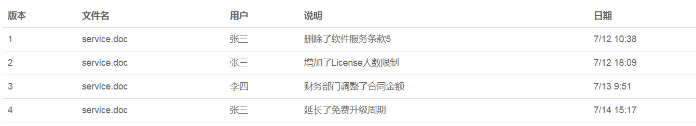
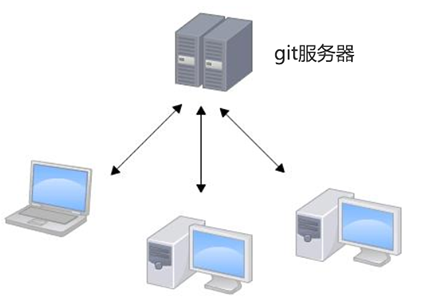

<!DOCTYPE html><html><head><meta charset="utf-8"><title>git 教学讲义 | 技术学派</title><meta name="viewport" content="width=device-width,initial-scale=1,maximum-scale=1"><meta name="keywords" content="IT培训, Python, 大数据, 人工智能, Web前端, PHP, "><meta name="description" content="第一章 git基础知识第一节 git 简介1. 版本管理当我们在编辑word文档时，可能会在每次修改后会保存一个副本，并注明本次修改了哪些内容，可能会是如下的情况:有时，这个文件可能还需要你的同事帮你继续修改，这样你将一个版本的word文档发给同事修改，与此同时，你又在原版本上做了新的修改，当你同事将修改好的内容发给你时，你会发现将两个版本的word文档整理为一个新版本并不是件轻松的事儿。在团队项"><meta property="og:type" content="article"><meta property="og:title" content="git 教学讲义"><meta property="og:url" content="http://www.JiShuXuePai.com/blog/git/Git/git基础知识/index.html"><meta property="og:site_name" content="技术学派"><meta property="og:description" content="第一章 git基础知识第一节 git 简介1. 版本管理当我们在编辑word文档时，可能会在每次修改后会保存一个副本，并注明本次修改了哪些内容，可能会是如下的情况:有时，这个文件可能还需要你的同事帮你继续修改，这样你将一个版本的word文档发给同事修改，与此同时，你又在原版本上做了新的修改，当你同事将修改好的内容发给你时，你会发现将两个版本的word文档整理为一个新版本并不是件轻松的事儿。在团队项"><meta property="og:locale" content="zh-CN"><meta property="og:image" content="http://www.jishuxuepai.com/blog/git/Git/git基础知识/git_01.png"><meta property="og:updated_time" content="2018-05-11T08:14:13.252Z"><meta name="twitter:card" content="summary"><meta name="twitter:title" content="git 教学讲义"><meta name="twitter:description" content="第一章 git基础知识第一节 git 简介1. 版本管理当我们在编辑word文档时，可能会在每次修改后会保存一个副本，并注明本次修改了哪些内容，可能会是如下的情况:有时，这个文件可能还需要你的同事帮你继续修改，这样你将一个版本的word文档发给同事修改，与此同时，你又在原版本上做了新的修改，当你同事将修改好的内容发给你时，你会发现将两个版本的word文档整理为一个新版本并不是件轻松的事儿。在团队项"><meta name="twitter:image" content="http://www.jishuxuepai.com/blog/git/Git/git基础知识/git_01.png"><link rel="stylesheet" href="/libs/bootstrap/bootstrap-grid.css"><link rel="stylesheet" href="/libs/font-awesome/css/font-awesome.min.css"><link rel="stylesheet" href="/libs/titillium-web/styles.css"><link rel="stylesheet" href="/libs/source-code-pro/styles.css"><link rel="stylesheet" href="/css/style.css"><script src="/libs/jquery/jquery.min.js"></script><link rel="stylesheet" href="/libs/lightgallery/css/lightgallery.min.css"><link rel="stylesheet" href="/libs/justified-gallery/justifiedGallery.min.css"><script>var _hmt=_hmt||[];!function(){var e=document.createElement("script");e.src="//hm.baidu.com/hm.js?4c1bd812de3c30edbaa2b803c66f0a04";var t=document.getElementsByTagName("script")[0];t.parentNode.insertBefore(e,t)}()</script></head></html><body><div id="wrap"><header id="header"><div id="header-outer" class="outer"><div class="container"><div class="container-inner"><div id="header-title"><h1 class="logo-wrap"><a href="/" class="logo"></a></h1></div><div id="header-inner" class="nav-container"><a id="main-nav-toggle" class="nav-icon fa fa-bars">菜单</a><div class="nav-container-inner"><ul id="main-nav"><li class="main-nav-list-item"><a class="main-nav-list-link" href="/">主页</a></li><li class="main-nav-list-item"><a class="main-nav-list-link" href="/edu/index.html">学编程</a></li><li class="main-nav-list-item"><a class="main-nav-list-link" href="/blog/">博客</a></li><li class="main-nav-list-item"><a class="main-nav-list-link" href="/nav.html">网站导航</a></li><li class="main-nav-list-item"><a class="main-nav-list-link" href="/tips.html">学习建议</a></li><li class="main-nav-list-item"><a class="main-nav-list-link" href="/about.html">关于</a></li></ul><nav id="sub-nav"><div id="search-form-wrap"><form class="search-form"><input type="text" class="ins-search-input search-form-input" placeholder="搜索"> <button type="submit" class="search-form-submit"></button></form><div class="ins-search"><div class="ins-search-mask"></div><div class="ins-search-container"><div class="ins-input-wrapper"><input type="text" class="ins-search-input" placeholder="想要查找什么..."> <span class="ins-close ins-selectable"><i class="fa fa-times-circle"></i></span></div><div class="ins-section-wrapper"><div class="ins-section-container"></div></div></div></div><script>window.INSIGHT_CONFIG={TRANSLATION:{POSTS:"文章",PAGES:"页面",CATEGORIES:"分类",TAGS:"标签",UNTITLED:"(未命名)"},ROOT_URL:"/",CONTENT_URL:"/content.json"}</script><script src="/js/insight.js"></script></div></nav></div></div></div></div></div></header><div class="container"><div class="main-body container-inner"><div class="main-body-inner"><section id="main"><div class="main-body-header"><h1 class="header"><a class="page-title-link" href="/categories/git/">git</a><div class="author">杨永胜</div></h1></div><div class="main-body-content"><article id="post-Git/git基础知识" class="article article-single article-type-post" itemscope itemprop="blogPost"><div class="article-inner"><header class="article-header"><h1 class="article-title" itemprop="name">git 教学讲义</h1></header><div class="article-meta"><div class="article-date"><a href="/blog/git/Git/git基础知识/" class="article-date"><time datetime="2018-05-11T08:14:13.252Z" itemprop="datePublished">2018-05-11</time></a></div></div><div class="article-entry" itemprop="articleBody"><h1 id="第一章-git基础知识"><a href="#第一章-git基础知识" class="headerlink" title="第一章  git基础知识"></a>第一章 git基础知识</h1><h2 id="第一节-git-简介"><a href="#第一节-git-简介" class="headerlink" title="第一节 git 简介"></a>第一节 git 简介</h2><h3 id="1-版本管理"><a href="#1-版本管理" class="headerlink" title="1. 版本管理"></a>1. 版本管理</h3><blockquote><p>当我们在编辑word文档时，可能会在每次修改后会保存一个副本，并注明本次修改了哪些内容，可能会是如下的情况:</p></blockquote><p></p><blockquote><p>有时，这个文件可能还需要你的同事帮你继续修改，这样你将一个版本的word文档发给同事修改，与此同时，你又在原版本上做了新的修改，当你同事将修改好的内容发给你时，你会发现将两个版本的word文档整理为一个新版本并不是件轻松的事儿。在团队项目开发时，上述情况非常普遍，这样就出现了类似于svn或git这样的版本工具，这些工具可以帮助我们轻松的实现文件的版本管理以及多人协作的问题。</p></blockquote><h3 id="2-什么是git"><a href="#2-什么是git" class="headerlink" title="2. 什么是git"></a>2. 什么是git</h3><ul><li>最优秀的版本控制管理工具</li><li>高端 大气上档次</li></ul><h3 id="3-git-特点"><a href="#3-git-特点" class="headerlink" title="3. git 特点"></a>3. git 特点</h3><ul><li>项目版本管理</li><li>大型项目多人协作</li><li>分布式版本工具</li></ul><blockquote><p>当项目需要多人协作时，需要git服务器，但是在我们学习或进行项目研究时，如果搭建专门的git服务器显然成本太高，这样就出现了免费的git服务器，可以帮助我们进行代码托管，版本控制以及多人协作，国外比较知名的网站有 github.com ，国内的有 codding.net ，二者在使用上也很类似。</p></blockquote><p></p><h2 id="第二节-git安装与配置"><a href="#第二节-git安装与配置" class="headerlink" title="第二节 git安装与配置"></a>第二节 git安装与配置</h2><h3 id="1-git的安装"><a href="#1-git的安装" class="headerlink" title="1. git的安装"></a>1. git的安装</h3><blockquote><p>windows 下安装步骤</p><p>官网下载 ：<a href="https://git-scm.com/" target="_blank" rel="noopener">https://git-scm.com/</a></p><p>1 use git from the windows command prompt // 选择默认项</p><p>2 checkout windows-style,commit unix-style line endings // 使用默认项</p><p>安装完成后，在命令提示符下输入git , 提示信息为可选参数帮助信息即为安装成功;</p></blockquote><h3 id="2-git的配置"><a href="#2-git的配置" class="headerlink" title="2. git的配置"></a>2. git的配置</h3><blockquote><p>因为Git是分布式版本控制系统，所以，每个机器都必须自报家门：你的名字和Email地址。否则版本库不知道是哪位程序员进行的版本更新。</p></blockquote><figure class="highlight shell"><table><tr><td class="gutter"><pre><span class="line">1</span><br><span class="line">2</span><br><span class="line">3</span><br></pre></td><td class="code"><pre><span class="line"><span class="meta">$</span> git config --global user.name "Your Name"           // 配置用户名</span><br><span class="line"><span class="meta">$</span> git config --global user.email "email@example.com"  // 配置邮箱</span><br><span class="line"><span class="meta">$</span> git config --global  --list  // 查看当前git的配置信息</span><br></pre></td></tr></table></figure><h2 id="第三节-git的基本概念"><a href="#第三节-git的基本概念" class="headerlink" title="第三节 git的基本概念"></a>第三节 git的基本概念</h2><h3 id="1-创建版本库"><a href="#1-创建版本库" class="headerlink" title="1.创建版本库"></a>1.创建版本库</h3><blockquote><p>什么是版本库呢？版本库又名仓库，英文名<strong>repository</strong>，你可以简单理解成一个目录，这个目录里面的所有文件都可以被Git管理起来，每个文件的修改、删除，Git都能跟踪，以便任何时刻都可以追踪历史，或者在将来某个时刻可以“还原”。</p></blockquote><figure class="highlight shell"><table><tr><td class="gutter"><pre><span class="line">1</span><br></pre></td><td class="code"><pre><span class="line"><span class="meta">$</span> d:/git-test&gt;   git init  ;  // git初始化, 会创建隐藏目录.git 即为git仓库;</span><br></pre></td></tr></table></figure><h3 id="2-工作区、暂存区、版本库的概念"><a href="#2-工作区、暂存区、版本库的概念" class="headerlink" title="2.工作区、暂存区、版本库的概念"></a>2.工作区、暂存区、版本库的概念</h3><ul><li>工作区：就是电脑里所创建的目录,这里存放的是项目中所有文件;</li><li>暂存区: 我们需将工作区文件提交到版本库，才能实现对文件的版本控制，而暂存区时文件从工作区提交到版本库的一个临时存储区域;</li><li>版本库：工作区有一个隐藏目录.git，就是Git的版本库, 提交到版本库的文件可以被git管理;</li></ul><figure class="highlight shell"><table><tr><td class="gutter"><pre><span class="line">1</span><br><span class="line">2</span><br><span class="line">3</span><br><span class="line">4</span><br><span class="line">5</span><br></pre></td><td class="code"><pre><span class="line">// 1 将文件提交到暂存区</span><br><span class="line"><span class="meta">$</span> git add fileName</span><br><span class="line"></span><br><span class="line">// 2 将文件提交到版本库</span><br><span class="line"><span class="meta">$</span> git commit -m  '提交注释信息'</span><br></pre></td></tr></table></figure></div><footer class="article-footer"><a data-url="http://www.JiShuXuePai.com/blog/git/Git/git基础知识/" data-id="cjhixf70r000yhbfy9p35d9bg" class="article-share-link"><i class="fa fa-share"></i>分享到</a><script>!function(n){n("body").on("click",function(){n(".article-share-box.on").removeClass("on")}).on("click",".article-share-link",function(t){t.stopPropagation();var e,a=n(this),o=a.attr("data-url"),r=encodeURIComponent(o),i="article-share-box-"+a.attr("data-id"),s=a.offset();if(n("#"+i).length){if((e=n("#"+i)).hasClass("on"))return void e.removeClass("on")}else{var l=['<div id="'+i+'" class="article-share-box">','<input class="article-share-input" value="'+o+'">','<div class="article-share-links">','<a href="https://twitter.com/intent/tweet?url='+r+'" class="article-share-twitter" target="_blank" title="Twitter"></a>','<a href="https://www.facebook.com/sharer.php?u='+r+'" class="article-share-facebook" target="_blank" title="Facebook"></a>','<a href="http://pinterest.com/pin/create/button/?url='+r+'" class="article-share-pinterest" target="_blank" title="Pinterest"></a>','<a href="https://plus.google.com/share?url='+r+'" class="article-share-google" target="_blank" title="Google+"></a>',"</div>","</div>"].join("");e=n(l),n("body").append(e)}n(".article-share-box.on").hide(),e.css({top:s.top+25,left:s.left}).addClass("on")}).on("click",".article-share-box",function(t){t.stopPropagation()}).on("click",".article-share-box-input",function(){n(this).select()}).on("click",".article-share-box-link",function(t){t.preventDefault(),t.stopPropagation(),window.open(this.href,"article-share-box-window-"+Date.now(),"width=500,height=450")})}(jQuery)</script></footer></div></article><section id="comments"><div id="gitalk_frame"></div></section></div></section><aside id="sidebar"><a class="sidebar-toggle" title="Expand Sidebar"><i class="toggle icon"></i></a><div class="sidebar-top"><p>关注我 :</p><ul class="social-links"><li><a class="social-tooltip" title="火星时代" href="http://edu.hxsd.com/edunew/topics/webfull/index.html" target="_blank"><i class="icon fa fa-dribbble"></i></a></li><li><a class="social-tooltip" title="weibo" href="#" target="_blank"><i class="icon fa fa-weibo"></i></a></li><li><a class="social-tooltip" title="rss" href="/atom.xml" target="_blank"><i class="icon fa fa-rss"></i></a></li></ul></div><nav id="article-nav"><a href="/blog/js/JavaScript中的内存管理/" id="article-nav-newer" class="article-nav-link-wrap"><strong class="article-nav-caption">下一篇</strong><p class="article-nav-title">JavaScript中的内存管理</p><i class="icon fa fa-chevron-right" id="icon-chevron-right"></i> </a><a href="/blog/学习答疑/学习答疑/我的天，小学生都已经开始学Python了！十年后你还有工作么？/" id="article-nav-older" class="article-nav-link-wrap"><strong class="article-nav-caption">上一篇</strong><p class="article-nav-title">我的天，小学生都已经开始学Python了！十年后你还有工作么？</p><i class="icon fa fa-chevron-left" id="icon-chevron-left"></i></a></nav><div class="widgets-container"><div class="widget-wrap widget-list"><h3 class="widget-title">分类</h3><div class="widget"><ul class="category-list"><li class="category-list-item"><a class="category-list-link" href="/categories/animate/">animate</a><span class="category-list-count">17</span></li><li class="category-list-item"><a class="category-list-link" href="/categories/git/">git</a><span class="category-list-count">1</span></li><li class="category-list-item"><a class="category-list-link" href="/categories/html/">html</a><span class="category-list-count">2</span></li><li class="category-list-item"><a class="category-list-link" href="/categories/js/">js</a><span class="category-list-count">5</span></li><li class="category-list-item"><a class="category-list-link" href="/categories/php/">php</a><span class="category-list-count">3</span></li><li class="category-list-item"><a class="category-list-link" href="/categories/vue/">vue</a><span class="category-list-count">1</span></li><li class="category-list-item"><a class="category-list-link" href="/categories/学习答疑/">学习答疑</a><span class="category-list-count">7</span></li><li class="category-list-item"><a class="category-list-link" href="/categories/插件资源库/">插件资源库</a><span class="category-list-count">2</span></li></ul></div></div><link rel="stylesheet" href="/css/tech/toc.css"><div class="widget-wrap widget-list widget-toc"><h3 class="widget-title">目录</h3><div class="widget"><div class="toc"></div><link rel="stylesheet" href="https://cdnjs.cloudflare.com/ajax/libs/tocbot/3.0.5/tocbot.css"><script src="https://cdnjs.cloudflare.com/ajax/libs/tocbot/3.0.5/tocbot.min.js"></script><script>$(function(){$(".main-body-content").find("h1,h2,h3").each(function(t){$(this).attr("id")||$(this).attr("id","list"+t)}),tocbot.init({tocSelector:".toc",contentSelector:".main-body-content",headingSelector:"h1, h2, h3",collapseDepth:2,positionFixedSelector:".widget-toc",fixedSidebarOffset:595,includeHtml:!1})})</script></div></div><div class="widget-wrap widget-list"><h3 class="widget-title">标签</h3><div class="widget"><ul class="tag-list"><li class="tag-list-item"><a class="tag-list-link" href="/tags/python/">python</a><span class="tag-list-count">4</span></li><li class="tag-list-item"><a class="tag-list-link" href="/tags/web前端/">web前端</a><span class="tag-list-count">1</span></li></ul></div></div><div class="widget-wrap widget-float"><h3 class="widget-title">标签云</h3><div class="widget tagcloud"><a href="/tags/python/" style="font-size:20px">python</a> <a href="/tags/web前端/" style="font-size:10px">web前端</a></div></div><div class="widget-wrap widget-list"><h3 class="widget-title">链接</h3><div class="widget"><ul><li><a href="http://edu.hxsd.com/edunew/topics/webfull/index.html">火星时代</a></li></ul></div></div></div></aside><script>$(function(){$(window).scroll(function(){240<=$(document).scrollTop()?($("#sidebar .sidebar-toggle").addClass("fix"),"block"==$("#sidebar .sidebar-toggle").css("display")&&$(".is-position-fixed").css("top","35px")):$("#sidebar .sidebar-toggle").removeClass("fix")})})</script></div></div></div><footer id="footer"><div class="top"><div class="inner"><div class="list"><div class="left clearfix"><dl><dt>关于我们</dt><dd><a href="/about.html">公司简介</a></dd><dd><a href="edu/index.html">联系我们</a></dd></dl><dl><dt>校区攻略</dt><dd><a href="edu/index.html">校区环境</a></dd><dd><a href="edu/index.html">住宿攻略</a></dd><dd><a href="edu/index.html">来校路线</a></dd></dl><dl><dt>课程培训</dt><dd><a href="edu/python.html">Web前端</a></dd><dd><a href="edu/python.html">Python</a></dd><dd><a href="edu/python.html">人工智能</a></dd><dd><a href="edu/python.html">大数据</a></dd></dl><dl><dt>常见问答</dt><dd><a href="edu/index.html">学费学时</a></dd><dd><a href="edu/index.html">学习方法</a></dd></dl></div></div><div class="tel"><tel>176-0025-8815</tel><span>北京市海淀区杏石口路81号火星时代大厦</span></div><div class="weixin"><div class="w1"> <span>头条号</span></div><div class="w1"> <span>官方微信</span></div></div></div></div><div class="bot">Copyright 2018 技术学派 京ICP备15015508号-3</div></footer><link rel="stylesheet" href="https://unpkg.com/gitalk/dist/gitalk.css"><script src="https://unpkg.com/gitalk/dist/gitalk.min.js"></script><script>var gitalk=new Gitalk({clientID:"2fbbb9980b49019d99a7",clientSecret:"152dd10e83ef6595761ea2185304f9ac8263573f",repo:"jsxp",owner:"li-kang",admin:["li-kang"]});gitalk.render("gitalk_frame")</script><script src="/libs/lightgallery/js/lightgallery.min.js"></script><script src="/libs/lightgallery/js/lg-thumbnail.min.js"></script><script src="/libs/lightgallery/js/lg-pager.min.js"></script><script src="/libs/lightgallery/js/lg-autoplay.min.js"></script><script src="/libs/lightgallery/js/lg-fullscreen.min.js"></script><script src="/libs/lightgallery/js/lg-zoom.min.js"></script><script src="/libs/lightgallery/js/lg-hash.min.js"></script><script src="/libs/lightgallery/js/lg-share.min.js"></script><script src="/libs/lightgallery/js/lg-video.min.js"></script><script src="/libs/justified-gallery/jquery.justifiedGallery.min.js"></script><script src="/js/main.js"></script></div></body>